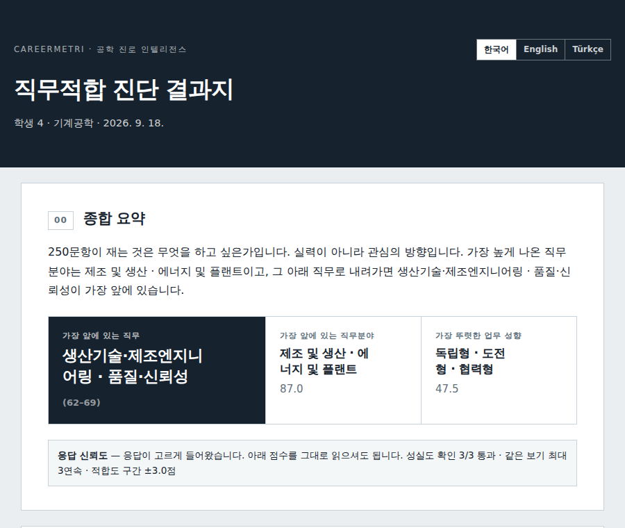
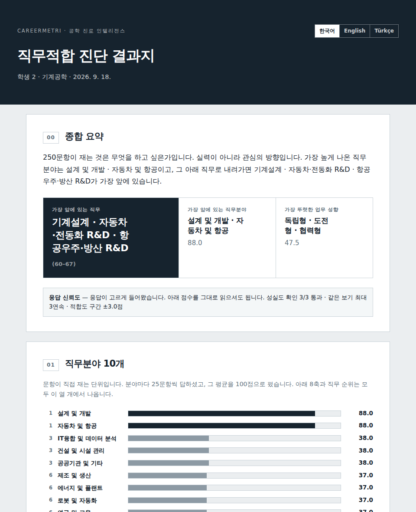
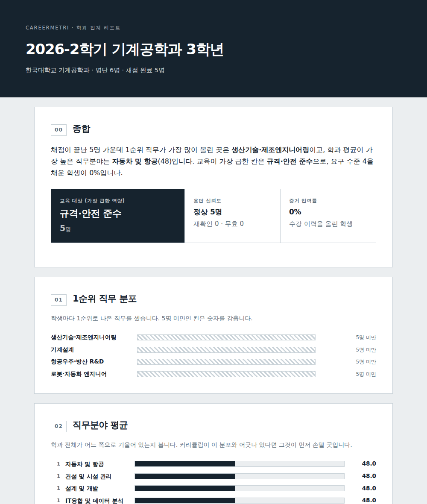

<title>커리어메트리 도입 안내</title>
<meta name="description" content="대학 공과계열 학과에 파는 직무적합 진단. 제안서 내용을 그대로 한 장에 담았다." />
<link rel="stylesheet" href="https://fonts.googleapis.com/css2?family=Gothic+A1:wght@500;700;800&family=IBM+Plex+Sans+KR:wght@400;500;600&family=IBM+Plex+Mono:wght@400;500&display=swap" />
<!--
  커리어메트리 대학·기관 소개 한 장.

  · 원고는 sites/imweb/copy.md 와 같은 것이다. 아임웹 에디터로 옮기지 않고
    코드로 만든 판이다.
  · 정체성은 CLAUDE.md 를 따른다 — 어두운 바탕 + 금색 강조, 결과지만 흰
    문서로 띄운다. 그래서 화면 캡처가 네이비 위에 흰 판으로 떠 있다.
  · 한 세계로 못 박은 디자인이라 라이트/다크를 나누지 않았다. 대신 배경과
    모든 색을 명시했다.
  · html·head·body 태그를 쓰지 않았다. 브라우저가 알아서 올려 주고,
    Artifact 로 올릴 때도 같은 파일을 쓴다.
-->
<style>
  :root {
    --ink:   #0F1B2D;   /* 바탕 */
    --ink2:  #16273C;   /* 올라온 칸 */
    --ink3:  #1D3249;   /* 더 올라온 칸 */
    --gold:  #C9A227;   /* 강조 */
    --gold-d:#8F7318;
    --paper: #FFFFFF;   /* 문서만 */
    --text:  #E8EDF2;
    --mute:  #8D9CAE;   /* 네이비로 기운 회색 */
    --line:  #24374F;
    --mono: "IBM Plex Mono", ui-monospace, SFMono-Regular, Menlo, monospace;
    --body: "IBM Plex Sans KR", "Apple SD Gothic Neo", "Malgun Gothic", system-ui, sans-serif;
    --disp: "Gothic A1", "Apple SD Gothic Neo", "Malgun Gothic", system-ui, sans-serif;
  }
  * { box-sizing: border-box; }
  body {
    margin: 0; background: var(--ink); color: var(--text);
    font-family: var(--body); font-size: 16px; line-height: 1.75;
    -webkit-font-smoothing: antialiased;
    /* 한국어는 기본값이면 낱말 가운데서도 끊는다. 제목에서 '다음' 이
       '다 / 음' 으로 갈라졌다 */
    word-break: keep-all; overflow-wrap: break-word;
  }
  img { max-width: 100%; display: block; }
  a { color: var(--text); }
  :focus-visible { outline: 2px solid var(--gold); outline-offset: 3px; }

  /* ---------- 틀 ---------- */
  .wrap { max-width: 1120px; margin: 0 auto; padding-inline: 20px; }
  .col  { max-width: 640px; }                       /* 읽는 줄은 좁게 */
  section { padding-block: 64px; border-top: 1px solid var(--line); }
  section:first-of-type { border-top: 0; }

  /* 절 머리 — 번호는 순서가 뜻을 가질 때만 붙였다 */
  .eyebrow {
    font-family: var(--mono); font-size: 12px; letter-spacing: .14em;
    text-transform: uppercase; color: var(--gold); margin: 0 0 14px;
    display: flex; align-items: center; gap: 12px;
  }
  .eyebrow::after { content: ""; flex: 1; height: 1px; background: var(--line); }
  h2 {
    font-family: var(--disp); font-weight: 800; font-size: clamp(24px, 3.4vw, 33px);
    line-height: 1.3; letter-spacing: -.02em; margin: 0 0 18px; text-wrap: balance;
  }
  h3 {
    font-family: var(--disp); font-weight: 700; font-size: 17px;
    margin: 0 0 6px; letter-spacing: -.01em;
  }
  p { margin: 0 0 16px; }
  .lead { font-size: 18px; color: var(--text); }
  .sub  { color: var(--mute); }
  .small { font-size: 13.5px; color: var(--mute); line-height: 1.7; }

  /* ---------- 머리띠 ---------- */
  header.top {
    position: sticky; top: env(safe-area-inset-top, 0px); z-index: 20;
    background: rgba(15, 27, 45, .92); backdrop-filter: blur(8px);
    border-bottom: 1px solid var(--line);
  }
  .top .wrap { display: flex; align-items: center; gap: 22px; padding-block: 13px; }
  .brand {
    font-family: var(--disp); font-weight: 800; font-size: 16px;
    letter-spacing: .06em; white-space: nowrap;
  }
  .brand em { color: var(--gold); font-style: normal; }
  .top nav { margin-left: auto; display: flex; gap: 18px; flex-wrap: wrap; }
  .top nav a {
    font-size: 13.5px; color: var(--mute); text-decoration: none; white-space: nowrap;
  }
  .top nav a:hover { color: var(--text); }

  /* ---------- 히어로 ---------- */
  .hero { padding-block: 76px 60px; }
  .hero h1 {
    font-family: var(--disp); font-weight: 800;
    font-size: clamp(30px, 5.4vw, 52px); line-height: 1.2; letter-spacing: -.035em;
    margin: 0 0 22px; max-width: 18ch; text-wrap: balance;
  }
  .hero h1 span { color: var(--gold); }
  .cta { display: flex; gap: 12px; flex-wrap: wrap; margin-top: 30px; }
  .btn {
    font-family: var(--body); font-weight: 600; font-size: 15px;
    padding: 13px 24px; text-decoration: none; border: 1px solid var(--gold);
    color: var(--ink); background: var(--gold);
  }
  .btn.ghost { background: transparent; color: var(--gold); }
  .btn:hover { background: #D8B23A; border-color: #D8B23A; color: var(--ink); }
  .btn.ghost:hover { background: rgba(201,162,39,.12); color: var(--gold); }

  /* ---------- 칸 묶음 ---------- */
  .grid { display: grid; gap: 1px; background: var(--line); margin-top: 8px; }
  .g4 { grid-template-columns: repeat(auto-fit, minmax(210px, 1fr)); }
  .g2 { grid-template-columns: repeat(auto-fit, minmax(280px, 1fr)); }
  .g3 { grid-template-columns: repeat(auto-fit, minmax(240px, 1fr)); }
  .cell { background: var(--ink); padding: 24px 22px; }
  .cell .n {
    font-family: var(--mono); font-size: 12px; color: var(--gold-d);
    letter-spacing: .1em; display: block; margin-bottom: 10px;
  }
  .cell p { margin: 0; font-size: 14.5px; color: var(--mute); line-height: 1.7; }
  .cell ul { margin: 10px 0 0; padding: 0; list-style: none; }
  .cell li {
    font-size: 14.5px; color: var(--mute); padding-left: 16px; position: relative;
    line-height: 1.7;
  }
  .cell li::before {
    content: ""; position: absolute; left: 2px; top: 12px;
    width: 5px; height: 5px; background: var(--gold-d);
  }

  /* ---------- 흰 문서판 (결과지만) ---------- */
  .plate { margin-top: 26px; background: var(--paper); padding: 14px; }
  .plate img { border: 1px solid #DDE3E9; }
  .plate figcaption {
    font-family: var(--mono); font-size: 11.5px; color: #5B6B7B;
    letter-spacing: .06em; padding: 10px 2px 2px; text-transform: uppercase;
  }
  figure { margin: 0; }

  /* ---------- 표 ---------- */
  .tw { overflow-x: auto; margin-top: 22px; }
  table { border-collapse: collapse; width: 100%; font-size: 14.5px; min-width: 460px; }
  th, td { text-align: left; padding: 11px 14px; border-bottom: 1px solid var(--line); }
  th {
    font-family: var(--mono); font-size: 11.5px; letter-spacing: .1em;
    text-transform: uppercase; color: var(--gold); font-weight: 500;
    border-bottom-color: var(--gold-d);
  }
  td { color: var(--mute); vertical-align: top; }
  td.name { color: var(--text); font-weight: 500; }
  td.num { font-family: var(--mono); font-variant-numeric: tabular-nums; text-align: right; }

  /* ---------- 문항 인용 ---------- */
  .items { margin-top: 20px; display: grid; gap: 10px; }
  .item {
    background: var(--ink2); border-left: 2px solid var(--gold-d);
    padding: 13px 16px; font-size: 14.5px; line-height: 1.65;
  }
  .item b {
    display: block; font-family: var(--mono); font-size: 11px; color: var(--gold);
    letter-spacing: .1em; margin-bottom: 5px; font-weight: 500;
  }

  /* ---------- 근거 숫자 ---------- */
  .facts {
    display: grid; grid-template-columns: repeat(auto-fit, minmax(120px, 1fr));
    gap: 1px; background: var(--line); margin-top: 8px;
  }
  .fact { background: var(--ink); padding: 20px 18px; }
  .fact b {
    display: block; font-family: var(--disp); font-weight: 800; font-size: 26px;
    color: var(--text); letter-spacing: -.02em; font-variant-numeric: tabular-nums;
  }
  .fact span { font-size: 13px; color: var(--mute); }

  /* ---------- 패키지 ---------- */
  .packs { display: grid; gap: 18px; grid-template-columns: repeat(auto-fit, minmax(260px, 1fr)); margin-top: 22px; }
  .pack { border: 1px solid var(--line); padding: 26px 24px; background: var(--ink2); }
  .pack.pick { border-color: var(--gold); background: var(--ink3); }
  .pack .tag {
    font-family: var(--mono); font-size: 11px; letter-spacing: .14em; color: var(--gold);
    display: block; margin-bottom: 12px;
  }
  .pack .price {
    font-family: var(--disp); font-weight: 800; font-size: 23px; margin: 0 0 4px;
    letter-spacing: -.02em;
  }
  .pack .unit { font-size: 13px; color: var(--mute); margin-bottom: 16px; }
  .pack ul { margin: 0; padding: 0; list-style: none; }
  .pack li { font-size: 14px; color: var(--mute); padding: 5px 0 5px 20px; position: relative; }
  .pack li.on { color: var(--text); }
  .pack li::before {
    content: "○"; position: absolute; left: 0; color: var(--mute); opacity: .5;
    font-size: 12px; top: 7px;
  }
  .pack li.on::before { content: "●"; color: var(--gold); }

  /* ---------- 절차 ---------- */
  .steps { counter-reset: s; display: grid; gap: 1px; background: var(--line); margin-top: 22px; }
  .step {
    background: var(--ink); padding: 18px 22px; display: flex; gap: 16px; align-items: baseline;
  }
  .step::before {
    counter-increment: s; content: counter(s, decimal-leading-zero);
    font-family: var(--mono); font-size: 12px; color: var(--gold); flex: 0 0 auto;
  }
  .step b { font-weight: 600; margin-right: 10px; }
  .step span { color: var(--mute); font-size: 14.5px; }

  /* ---------- 강조 한 줄 ---------- */
  .pull {
    border-left: 2px solid var(--gold); padding: 4px 0 4px 20px; margin: 26px 0;
    font-family: var(--disp); font-weight: 700; font-size: clamp(17px, 2.2vw, 20px);
    line-height: 1.55; letter-spacing: -.01em;
  }

  /* ---------- 푸터 ---------- */
  footer { background: var(--ink2); border-top: 1px solid var(--line); padding-block: 44px 56px; }
  .legal { display: grid; grid-template-columns: repeat(auto-fit, minmax(210px, 1fr)); gap: 12px 28px; margin-top: 18px; }
  .legal div { font-size: 13.5px; color: var(--mute); }
  .legal dt { font-family: var(--mono); font-size: 11px; letter-spacing: .1em; color: var(--mute); text-transform: uppercase; }
  .legal dd { margin: 2px 0 0; color: var(--text); }
  .need { color: var(--gold); }
  @media (prefers-reduced-motion: reduce) { * { transition: none !important; animation: none !important; } }
</style>

<header class="top">
  <div class="wrap">
    <span class="brand">CAREER<em>METRI</em></span>
    <nav>
      <a href="#measure">무엇을 재는가</a>
      <a href="#result">결과</a>
      <a href="#cohort">학과 리포트</a>
      <a href="#majors">제공 학과</a>
      <a href="#price">도입</a>
      <a href="#contact">문의</a>
    </nav>
  </div>
</header>

<section class="hero">
  <div class="wrap">
    <h1>전공은 정했는데, <span>그 다음이</span> 안 정해진 학생에게</h1>
    <div class="col">
      <p class="lead">
        같은 전공 안에서도 직무마다 하는 일과 준비할 것이 다릅니다. 학생이 어느 직무에 가까운지를 확인하고 그 직무를 어떻게 준비하면 되는지까지 한 권에 담아 드립니다.
          학과에서는 그 결과를 모아 다음 학기 프로그램을 정하실 수 있습니다.
      </p>
      <p class="small">
        모바일·PC 응시 15~20분 · 5점 척도 · 채점은 규칙으로 고정 ·
        직업정보제공사업 신고 J1700020220007호
      </p>
    </div>
    <div class="cta">
      <a class="btn" href="#contact">도입 문의하기</a>
      <a class="btn ghost" href="#result">결과 예시 보기</a>
    </div>
  </div>
</section>

<section>
  <div class="wrap">
    <p class="eyebrow">진로지원 현장의 과제</p>
    <h2>검사는 받았는데 그다음이 없습니다</h2>
    <div class="grid g4">
      <div class="cell"><span class="n">01</span><h3>졸업 후가 막막하다</h3>
        <p>전공은 정했는데 졸업하고 무슨 일을 하게 되는지는 모르는 학생이 많습니다.</p></div>
      <div class="cell"><span class="n">02</span><h3>검사 결과가 안 이어진다</h3>
        <p>성향은 알게 되지만 그래서 무엇을 준비하면 되는지까지는 듣지 못합니다.</p></div>
      <div class="cell"><span class="n">03</span><h3>같은 학과인데 수요가 다르다</h3>
        <p>같은 학과 안에서도 가고 싶은 직무와 필요한 지원이 서로 다릅니다.</p></div>
      <div class="cell"><span class="n">04</span><h3>기획에 근거가 없다</h3>
        <p>특강이나 멘토링 주제를 학생 자료 없이 정해야 합니다.</p></div>
    </div>
  </div>
</section>

<section>
  <div class="wrap">
    <p class="eyebrow">무엇이 나오는가</p>
    <h2>학생에게 한 권, 학과에 한 장</h2>
    <div class="grid g2">
      <div class="cell">
        <span class="n">학생</span><h3>개인 결과 리포트</h3>
        <ul>
          <li>전공 안에서 맞는 직무영역과 업무성향</li>
          <li>우선 탐색할 직무와 포트폴리오 방향</li>
          <li>자기소개서·면접·창업 전략</li>
          <li>다음 30일 실행 체크리스트</li>
        </ul>
      </div>
      <div class="cell">
        <span class="n">대학 · 기관</span><h3>기관 분석 리포트</h3>
        <ul>
          <li>학과별 직무영역 분포</li>
          <li>학생 업무성향 분포</li>
          <li>후속 교육·멘토링 수요</li>
          <li>프로그램 기획과 성과관리 근거</li>
        </ul>
      </div>
    </div>
  </div>
</section>

<section id="measure">
  <div class="wrap">
    <p class="eyebrow">무엇을 재는가</p>
    <h2>두 가지를 함께 봅니다</h2>
    <div class="col">
      <p><strong>직무영역 열 개</strong>로 전공 안에서 어느 일에 끌리는지를 봅니다. 영역 하나를 25문항으로 보는데, 그중 13문항이 직무흥미를 묻고 나머지
        12문항이 성향까지 함께 봅니다.</p>
      <p><strong>업무성향 여섯 가지</strong>는 독립과 협력, 도전과 안정, 속도중시와 품질중시입니다. 성향 하나를 20문항으로 보되 열 개 직무영역에 두 문항씩 흩어
        놓아서, 같은 성향을 서로 다른 상황에서 다시 여쭙게 됩니다.</p>
    </div>

    <div class="items col">
      <div class="item"><b>직무흥미 · 설계 및 개발</b>
        도면과 해석 결과를 놓고 구조를 다시 잡는 과정이 흥미롭다.</div>
      <div class="item"><b>성향 반영 · 직무영역 + 품질중시형</b>
        해석 조건을 꼼꼼히 확인해 신뢰할 수 있는 결론을 내고 싶다.</div>
      <div class="item"><b>성향 반영 · 직무영역 + 협력형</b>
        설계 변경안을 팀원들과 주고받으며 함께 다듬는 과정이 즐겁다.</div>
    </div>

    <p class="pull col">등수를 매기는 대신 묶음으로 보여 드립니다.</p>
    <div class="col">
      <p class="sub">1순위와 2순위의 점수 차이가 측정 오차보다 작으면 그 순서를 믿기 어렵기 때문에, 구간이 겹치는 직무는 1군으로 함께 묶습니다. 같은 응답에는 언제나 같은 점수가 나오고,
        요청하시면 같은 답안을 다시 채점해 보여 드립니다.</p>
    </div>

    <div class="steps">
      <div class="step"><b>전공을 고른다</b><span>고른 전공의 직무영역으로 분석합니다</span></div>
      <div class="step"><b>직무흥미 문항</b><span>직무영역마다 흥미와 적합도를 봅니다</span></div>
      <div class="step"><b>성향 반영 문항</b><span>직무영역과 업무성향을 같이 재는 문항입니다</span></div>
    </div>

    <figure class="plate">
      
      <figcaption>응시 화면 · 문항마다 즉시 저장, 이어보기</figcaption>
    </figure>
  </div>
</section>

<section id="result">
  <div class="wrap">
    <p class="eyebrow">개인 결과 리포트</p>
    <h2>같은 학과인데 결과가 서로 다릅니다</h2>
    <div class="col">
      <p>아래는 같은 기계공학과 3학년 두 명인데, 이어서 필요한 프로그램도 서로 다르게 나옵니다.</p>
    </div>
    <div class="grid g2">
      <div class="cell">
        <span class="n">학생 A</span>
        <h3>설계 및 개발 · 자동차 및 항공</h3>
        <p>가장 앞선 직무 : 기계설계 · 자동차·전동화 R&amp;D · 항공우주·방산 R&amp;D<br />
          우선 지원 : 설계 직무특강, 구조해석 프로젝트</p>
      </div>
      <div class="cell">
        <span class="n">학생 B</span>
        <h3>IT융합 및 데이터 분석</h3>
        <p>가장 앞선 직무 : 로봇·자동화 엔지니어<br />
          우선 지원 : 제어·자동화 현직자 멘토링</p>
      </div>
    </div>

    <figure class="plate">
      
      <figcaption>개인 결과 리포트 · 종합 요약과 직무분야 10개</figcaption>
    </figure>
    <p class="small col" style="margin-top:14px">
      화면에 보이는 숫자는 시연용 응답으로 만든 예시라서 실제 학생 자료가 아닙니다. 첫 학과를 운영하고 나면 그 회차의 익명 예시로 바꿔 두겠습니다.
    </p>
  </div>
</section>

<section id="cohort">
  <div class="wrap">
    <p class="eyebrow">기관 분석 리포트</p>
    <h2>특강 주제를 학생들의 응답으로 정하실 수 있습니다</h2>
    <div class="col">
      <p>의뢰하신 기관의 담당자께 발행해 드립니다. 1순위 직무영역 분포와 업무성향 프로파일, 학년별 분포, 진로 형태, 교육 수요, 지역 정주 변화와 만족도까지 들어갑니다.</p>
    </div>
    <p class="pull col">5명 미만인 칸은 숫자를 내지 않습니다.</p>
    <div class="col">
      <p class="sub">익명으로 모은 집계라도 사람이 특정되기 시작하면 담당자가 특정 학생을 지목할 수 있게 되고, 그렇게 되면 이 자료를 쓰기가 어려워집니다. 감춘 칸은 빈 막대로 두지 않고
        빗금으로 그리는데, 빈 막대는 0명으로 읽히기 쉽습니다.</p>
    </div>
    <figure class="plate">
      
      <figcaption>학과 집계 리포트 · 분포 · 교육 수요 · 정주 변화</figcaption>
    </figure>
  </div>
</section>

<section>
  <div class="wrap">
    <p class="eyebrow">지역 정주 성과지표</p>
    <h2>응시 전과 후에 같은 것을 여쭙니다</h2>
    <div class="col">
      <p>검사 문항과는 별도로, 응시 전에 두 문항과 응시 후에 다섯 문항을 더 여쭙니다. 이 답은 검사 점수에 전혀 들어가지 않습니다.</p>
    </div>
    <div class="items col">
      <div class="item"><b>응시 전</b>졸업 후 우리 지역에서 취업하거나 정착할 의향이 있다.</div>
      <div class="item"><b>응시 전</b>우리 지역에 내 전공을 살릴 수 있는 기업·기관이 어디 있는지 알고 있다.</div>
      <div class="item"><b>응시 후</b>진단 결과를 확인한 지금, 졸업 후 우리 지역에서 취업하거나 정착할 의향이 있다.</div>
    </div>
    <div class="col">
      <p class="sub" style="margin-top:18px">앞과 뒤를 모두 답한 학생만 세어서 변화를 냅니다. 한쪽만 답한 학생을 섞으면 두 평균이 서로 다른 사람들의 평균이 되어 버려서, 그 차이를 변화라고 부를 수 없게 됩니다.
        만족도 네 문항도 함께 받는데 전반적인 만족과 이해도, 진로 준비에 도움이 됐는지, 다른 학생에게 권할 생각이 있는지를 여쭙니다. 대학과 RISE사업단, 지자체의 지역정주
        성과지표로 쓰실 수 있습니다.</p>
    </div>
  </div>
</section>

<section id="majors">
  <div class="wrap">
    <p class="eyebrow">제공 학과</p>
    <h2>학과마다 문항과 결과지를 따로 만듭니다</h2>
    <div class="col">
      <p>28개 학과의 설계는 끝나 있고, 문항을 채워 넣는 일은 공학 계열부터 하고 있습니다.</p>
    </div>
    <div class="tw">
      <table>
        <thead><tr><th>상태</th><th>검사명</th><th>대상 학과</th></tr></thead>
        <tbody>
          <tr>
            <td class="name" style="color:var(--gold)">운영 중</td>
            <td class="name">기계공학</td>
            <td>기계공학과 · 기계설계공학과 · 자동차공학과 · 메카트로닉스공학과</td>
          </tr>
          <tr>
            <td>순차 개설</td>
            <td class="name">공학 · 자연과학</td>
            <td>전기전자공학 · 인공지능 · 토목공학 · 화학공학 · 화학신소재 · 물리 · 화학 · 지질 · 생명바이오</td>
          </tr>
          <tr>
            <td>순차 개설</td>
            <td class="name">보건 · 생활과학</td>
            <td>간호 · 보건의료복지 · 식품영양 · 스포츠과학</td>
          </tr>
          <tr>
            <td>순차 개설</td>
            <td class="name">상경 · 사회, 디자인 · 미디어, 서비스 · 교육 · 인문</td>
            <td>경영 · 경제 · 행정 · 사회복지 · 심리 · 산업디자인 · 시각디자인 · 패션디자인 · 미디어영상 · 호텔관광 · 외식조리 · 미용 · 특수교육 · 언어</td>
          </tr>
        </tbody>
      </table>
    </div>
    <p class="small col" style="margin-top:16px">
      먼저 필요하신 학과를 말씀해 주시면 그 학과부터 열겠습니다. 문항이 준비되지 않은 학과는 운영 중이라고 적지 않았습니다.
    </p>
  </div>
</section>

<!-- 지역 연계 절을 지웠다. 기업·기관 표(`companies`)와 공고 표
     (`jd_postings`)가 **0줄**이어서, 매월 갱신하는 1만여 곳을 적합도로
     견준다는 말을 받칠 자료가 없다. 자료가 생기면 그때 다시 쓴다. -->

<section id="price">
  <div class="wrap">
    <p class="eyebrow">도입 패키지</p>
    <h2>진단에 분석과 후속 프로그램을 더해 드립니다</h2>
    <p class="small col">아래 금액은 기관이 학과나 학년 단위로 계약하실 때의 인당 단가이고, 개인이 혼자 결제하실 때의 값은 이 절 맨 아래에 따로 적어 두었습니다.</p>
    <div class="packs">
      <div class="pack">
        <span class="tag">BASIC</span>
        <p class="price">19,800원</p>
        <p class="unit">인당 · VAT 포함 · 온라인 PDF</p>
        <ul>
          <li class="on">개인 진단과 결과 리포트</li>
          <li class="on">응시 현황</li>
          <li>기관 분석 리포트</li>
          <li>결과해석 · 특강 · 멘토링</li>
        </ul>
      </div>
      <div class="pack pick">
        <span class="tag">INSIGHT · 권장</span>
        <p class="price">19,800원 +</p>
        <p class="unit">기관 분석 리포트는 규모별 견적</p>
        <ul>
          <li class="on">개인 진단과 결과 리포트</li>
          <li class="on">응시 현황</li>
          <li class="on">기관 분석 리포트</li>
          <li>결과해석 · 특강 · 멘토링</li>
        </ul>
      </div>
      <div class="pack">
        <span class="tag">PROGRAM</span>
        <p class="price">INSIGHT +</p>
        <p class="unit">아래 단가표 기준으로 추가</p>
        <ul>
          <li class="on">개인 진단과 결과 리포트</li>
          <li class="on">응시 현황</li>
          <li class="on">기관 분석 리포트</li>
          <li class="on">결과해석 · 특강 · 멘토링</li>
        </ul>
      </div>
    </div>

    <div class="tw">
      <table>
        <thead><tr><th>프로그램</th><th class="num">온라인</th><th class="num">오프라인</th><th>기준</th></tr></thead>
        <tbody>
          <tr><td class="name">진단 (결과지)</td><td class="num">19,800원</td><td class="num">별도 협의</td><td>인당 · PDF / 책자</td></tr>
          <tr><td class="name">취업 특강</td><td class="num">33만원</td><td class="num">50만원</td><td>시간당</td></tr>
          <tr><td class="name">현직자 멘토링</td><td class="num">50만원</td><td class="num">100만원</td><td>멘토 1명당</td></tr>
          <tr><td class="name">1대1 진로설계</td><td class="num">60만원</td><td class="num">80만원</td><td>인당</td></tr>
          <tr><td class="name">자기소개서 분석</td><td class="num">20만원</td><td class="num">30만원</td><td>인당</td></tr>
          <tr><td class="name">면접 분석</td><td class="num">25만원</td><td class="num">40만원</td><td>인당</td></tr>
          <tr><td class="name">PT 면접 분석</td><td class="num">40만원</td><td class="num">60만원</td><td>인당</td></tr>
        </tbody>
      </table>
    </div>
    <p class="small col" style="margin-top:16px">
      모두 기관 계약 기준이고 부가세가 포함된 금액입니다. 어느 프로그램을 고르시든 자기소개서 작성 가이드와 카카오톡 상담, 채용공고 공유는 함께 제공해 드립니다.
    </p>

    <p class="eyebrow" style="margin-top:52px">개인으로 오신 경우</p>
    <p class="small col">
      기관을 거치지 않고 혼자 응시하시는 경우에는 등급 셋 가운데 고르십니다. BASIC 은 값 없이 받으시고, 견주어야 할 것이 남으면 STANDARD 14,900원, 방향이 정해졌으면 PRO 21,900원으로
        여시면 되고, 문항을 다시 푸실 필요는 없습니다.
    </p>

    <p class="eyebrow" style="margin-top:52px">운영 절차</p>
    <div class="steps">
      <div class="step"><b>사전 협의</b><span>대상과 일정을 정합니다 · 의뢰 기관</span></div>
      <div class="step"><b>응시 세팅</b><span>학과별 응시 링크를 발급합니다 · ACADEMIX</span></div>
      <div class="step"><b>학생 응시</b><span>모바일·PC 15~20분 · 의뢰 기관 안내</span></div>
      <div class="step"><b>리포트 발급</b><span>개인 결과 리포트 · ACADEMIX</span></div>
      <div class="step"><b>기관 분석</b><span>익명 집계 리포트 · ACADEMIX</span></div>
      <div class="step"><b>후속 프로그램</b><span>특강 · 멘토링 · 1대1 설계 · ACADEMIX</span></div>
    </div>
  </div>
</section>

<section>
  <div class="wrap">
    <!-- 숫자 여섯 칸(2,346·2,091·428·137·62·48)과 준거 목록을 지웠다.
         받은 제안서에 적힌 값이고 우리가 확인할 수 없다. 그리고 '표준에 맞춰
         검증했다' 는 말을 할 수 없다: 인지 면접과 파일럿을 아직 돌리지
         않았다. 할 수 있는 말만 남긴다. -->
    <p class="eyebrow">무엇에 근거하는가</p>
    <h2>같은 응답이면 같은 점수가 나옵니다</h2>
    <div class="col">
      <p>직무마다 무엇을 확인해야 그 일을 설명할 수 있는지를 먼저 적고, 문항은 그 영역에서 역산해 만들었습니다. 점수는 공개된 가중치로 계산하므로 요청하시면 같은 답안을 다시 채점해 보여 드립니다. 인지 면접과 파일럿을 아직 돌리지 않았으므로 검증된 심리검사라고 말하지 않습니다.</p>
    </div>
    <div class="grid g2" style="margin-top:26px">
      <div class="cell">
        <span class="n">한국저작권위원회 등록 3건</span>
        <ul>
          <li>학과 지표 C-2025-058658</li>
          <li>학과 선택 지표 C-2025-059731</li>
          <li>대학원생용 진로 확인 지표 C-2025-059732</li>
        </ul>
      </div>
    </div>
    <p class="small col" style="margin-top:16px">
      버전을 고정해 두고 바뀐 내용을 기록하며 해마다 한 번 정기 검토를 합니다. 참조 준거는 설계할 때 기준으로 삼은 것이지 해당 기관에서 인증을 받았다는 뜻은 아닙니다.
    </p>
  </div>
</section>

<section id="contact">
  <div class="wrap">
    <p class="eyebrow">문의</p>
    <h2>학과 한 곳부터 시작하실 수 있습니다</h2>
    <div class="col">
      <p>대상 인원과 일정만 정해지면 응시 링크를 바로 발급해 드립니다. 아래로 연락 주시면 영업일 이틀 안에 답을 드리겠습니다.</p>
      <p class="small">기관명 · 담당자 성함 · 연락처 · 이메일 · 검토 중인 학과 ·
        예상 인원 · 문의 내용</p>
    </div>
    <div class="cta">
      <a class="btn" href="#contact">문의 남기기</a>
    </div>
    <p class="small col" style="margin-top:14px">
      연락처는 아직 <span class="need">확인 필요</span> 상태입니다. 담당자와 전화, 이메일이 정해지면 이 자리에 넣겠습니다.
    </p>
  </div>
</section>

<footer>
  <div class="wrap">
    <span class="brand">CAREER<em>METRI</em></span>
    <p class="small" style="margin-top:10px">
      대학 공과계열 학과에 파는 직무적합 진단 · 개발 ACADEMIX
    </p>
    <dl class="legal">
      <div><dt>상호</dt><dd class="need">확인 필요</dd></div>
      <div><dt>대표자</dt><dd class="need">확인 필요</dd></div>
      <div><dt>사업자등록번호</dt><dd class="need">확인 필요</dd></div>
      <div><dt>통신판매업 신고</dt><dd class="need">확인 필요</dd></div>
      <div><dt>주소</dt><dd class="need">확인 필요</dd></div>
      <div><dt>전화</dt><dd class="need">확인 필요</dd></div>
      <div><dt>이메일</dt><dd class="need">확인 필요</dd></div>
      <div><dt>개인정보 보호책임자</dt><dd class="need">확인 필요</dd></div>
      <div><dt>직업정보제공사업 신고</dt><dd>J1700020220007호</dd></div>
    </dl>
    <p class="small" style="margin-top:22px">
      금색으로 표시된 칸은 아직 값이 정해지지 않은 자리입니다. 전자상거래법 제10조가 요구하는 표시라서, 그냥 비워 두는 대신 눈에 띄게 남겨 두었습니다.
    </p>
  </div>
</footer>
